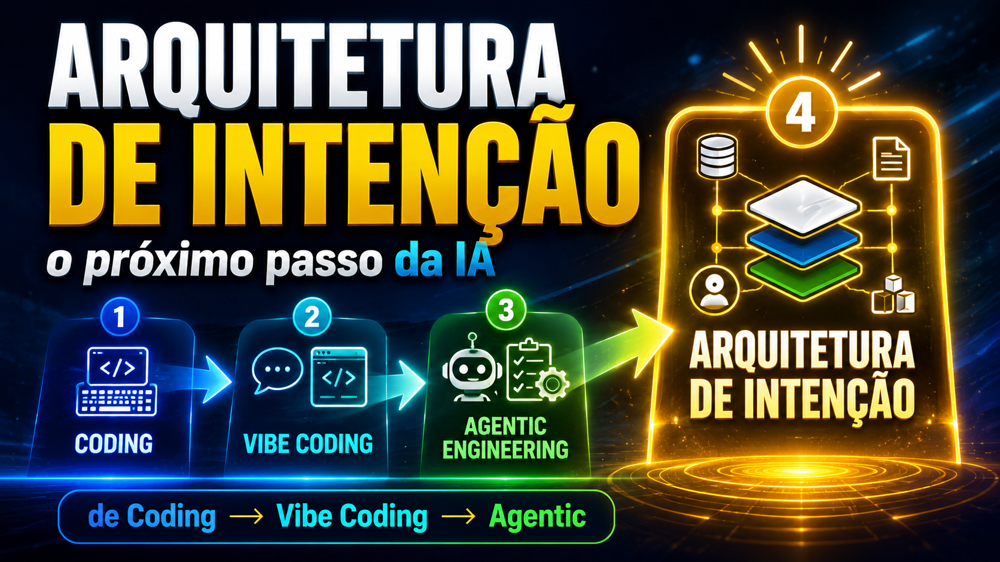

Arquitetura de Intenção
Prompt não basta.
Depois do coding, do vibe coding e dos agentes, vem a próxima camada: estruturar contexto, regras, memória, objetivos e validação para que a IA transforme intenção em resultado confiável, repetível e alinhado.
Em 3 dias você sai do uso improvisado da IA e aprende a projetar o sistema por trás da intenção — com a mesma lógica que vale para qualquer ferramenta.
A escada da IA — cada degrau eleva o papel de quem conduz. O topo é o foco da imersão.
Seu progresso na imersão
Marque cada seção como lida nos dias. Tudo fica salvo no seu navegador.
O que você vai construir
Não é "usar IA melhor". É sair com um sistema seu, funcionando.
Ver a pirâmide
Entender as 4 camadas e onde você está hoje — para parar de improvisar.
Dominar os 5 pilares
Contexto, objetivos, regras, memória e validação — estruturados num canvas.
Montar um sistema
Juntar tudo num fluxo repetível com o ciclo rodar → validar → ajustar → melhorar.
Sair aplicando
Um caso real seu atravessa os 3 dias e vira resultado concreto no fim.
A evolução, em quatro degraus
A pergunta muda de "como faço um prompt melhor?" para "que sistema orienta a IA?".
Coding
O humano escreve cada linha e controla toda a lógica.
Vibe Coding
Você descreve uma intenção em linguagem natural e a IA gera a primeira solução.
Engenharia Agêntica
A IA executa em ciclos — escreve, testa, corrige, entrega. Você deixa de operar cada etapa e passa a dirigir.
Arquitetura de Intenção
O foco sai do agente e vai para o sistema que orienta o agente. É aqui que a imersão vive.
Mapa da trilha
Pré-requisitos
- ✓Nenhum conhecimento de programação. Se você já usou um chat de IA, está pronto.
- ✓Vontade de aplicar, não só assistir. É mão na massa.
- ✓Um caso real seu (um problema, tarefa ou ideia) para levar nos 3 dias.
Como funciona a imersão
Dia 1 — Ver. Você enxerga a pirâmide, diagnostica onde está e escolhe sua intenção real.
Dia 2 — Estruturar. Você preenche os 5 pilares no Canvas para o seu caso.
Dia 3 — Montar. Você transforma o Canvas num sistema que roda e se melhora.
Cada dia tem exercícios práticos, exemplos prontos e um template reutilizável.
O próximo passo depois do prompt
Você vai usar IA no raso — ou estruturar sistemas capazes de multiplicar resultado? Comece agora.